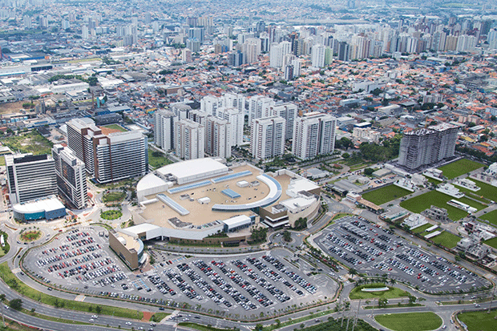
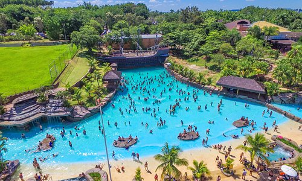
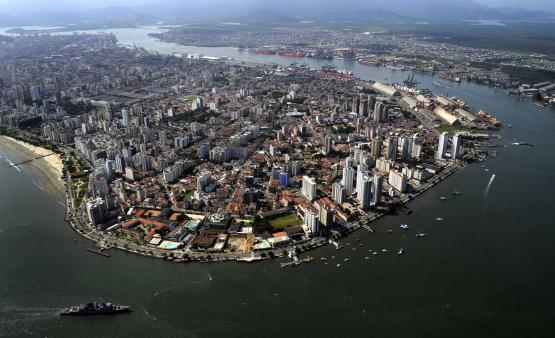
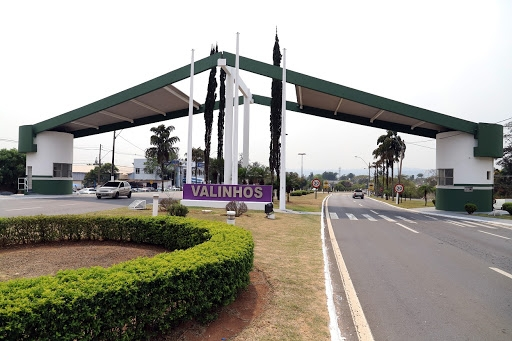

Qual a Melhor Cidade Para se Viver em São Paulo
Neste artigo você verá por dados coletados qual a melhor cidade para se viver em São Paulo.

A melhor cidade para se viver é Santos?
Muitos Pensam que a melhor cidade para se viver é a cidade de Santos, mas de acordo com pesquisas, o município de São Caetano do Sul foi considerado o melhor no quesito melhores municípios para se viver em São Paulo considerando as áreas de educação e expectativa de vida. As pesquisas são baseadas no IDHM(Índice de Deselvolvimento Humano).
Veja os dados Abaixo: ↓
As 5 Melhores cidades para se viver em São Paulo:
1ª São Caetano do Sul (SP) – IDHM 0,862:

Educação: 0,811
Expectativa de vida: 0,887 (78,2 anos)
Renda: 0,891 (2.043,74)
DHM Final: 0,862
2ª Águas de São Pedro (SP) – IDHM 0,854

Educação: 0,825
Expectativa de vida: 0,890 (78,37 anos)
Renda: 0,849 (1.580,72)
IDHM Final: 0,854
3ª Santos (SP) – IDHM 0,840

Educação: 0,807
Expectativa de vida: 0,852 (76,13 anos)
Renda: 0,861 (1.693,65)
IDHM Final: 0,840
4ª Jundiaí (SP) – IDHM 0,822

Educação: 0,768
Expectativa de vida: 0,866 (76,94 anos)
Renda: 0,834 (1.431,55)
IDHM Final: 0,822
5ª Valinhos (SP) – IDHM 0,819

Educação: 0,763
Expectativa de vida: 0,850 (76,01 anos)
Renda: 0,848 (1.570,91)
IDHM Final: 0,819
Bom agora que vimos as 5 melhores cidades para se viver em São Paulo, você deve estar se perguntando,"Cadê a Capital?".
De acordo com a Pesquisa a capital se encontra na 18º colocação, mas porquê?
 >
>
18ª São Paulo (SP) – IDHM 0,805
Educação: 0,725
Expectativa de vida: 0,855 (76,3 anos)
Renda: 0,843 (1.516,21)
IDHM Final: 0,805
Podemos ver que a expectativa de vida não passa dos 80 anos.
Mas porquê isso acontece?
Bom isso acontece pois a vida dos paulistanos é muito corrida e exige muito da sua capacidade emocional para levar as tarefas estressantes do dia a dia, por isso a expectativa de vida na capital é menor do que as outras, por causa do dia a dia corrido e estressante que os paulistanos enfrentam.
Concluindo o Assunto!
Vimos nesse artigo as 5 melhores cidades para se viver no Estado de São Paulo, suas Expectativas de vida, Educação e Renda. E vimos também o porque a grande capital não está em primeiro, mas temos que nos lembrar que cada município possuí suas qualidades e defeitos, no final o que importa é amarmos e cuidarmos da nossa cidade pois é para o bem de todos.
Muito Obrigado e até a próxima!
😀
Website feito por Gabriel Caetano Silva.